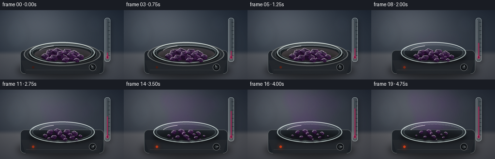
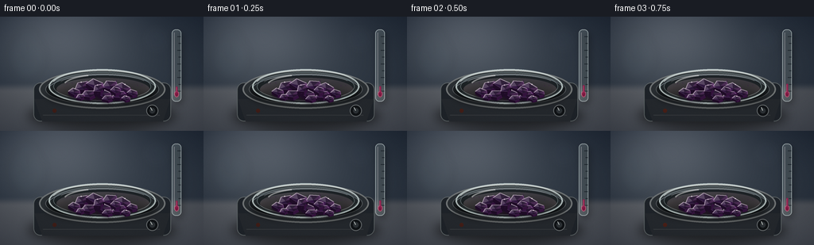
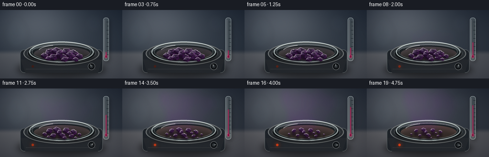

CODING AGENTS AS PIXEL WORLD MODELS
traex/GPT-5.6-Sol · phygen_118
点击播放 · 原生 RGB 像素
逐轮保存的候选
回放视频、检查图与代码变化。
每份候选均可单独播放。实际图片检查记录在下方工具轨迹中。
候选 01播放与检查图
点击播放 · 原生 RGB 像素


展开代码变化
--- 上一保存版本
+++ 本次保存版本
@@ -0,0 +1,356 @@
+"""Generate a stylized macro timelapse of iodine sublimation.
+
+The rendering is deterministic and uses only numpy/Pillow geometry. It depicts
+solid iodine shrinking (rather than melting) while violet iodine vapour rises as
+the temperature gradually increases.
+"""
+
+from pathlib import Path
+import math
+
+import numpy as np
+from PIL import Image, ImageDraw, ImageFilter
+
+import artifact_io
+
+
+W, H = 256, 144
+N = 20
+S = 4
+WW, HH = W * S, H * S
+ROOT = Path(__file__).resolve().parent
+
+
+def smoothstep(x):
+ x = np.clip(x, 0.0, 1.0)
+ return x * x * (3.0 - 2.0 * x)
+
+
+def pts(seq):
+ return [(round(x * S), round(y * S)) for x, y in seq]
+
+
+def box(b):
+ return tuple(round(v * S) for v in b)
+
+
+def layer():
+ return Image.new("RGBA", (WW, HH), (0, 0, 0, 0))
+
+
+def composite_tinted(base, mask, color, opacity=1.0):
+ """Composite a flat tint through a grayscale mask."""
+ if opacity != 1.0:
+ mask = mask.point(lambda p: int(p * opacity))
+ tint = Image.new("RGBA", base.size, color)
+ tint.putalpha(mask)
+ return Image.alpha_composite(base, tint)
+
+
+def base_background(frame_index):
+ """Cool laboratory background with a warm pool of bench light."""
+ yy, xx = np.mgrid[0:HH, 0:WW].astype(np.float32)
+ # Calm gray-blue laboratory, bright upper-left softbox reflection.
+ y = yy / HH
+ x = xx / WW
+ vignette = ((x - 0.49) ** 2 * 0.75 + (y - 0.48) ** 2 * 1.15)
+ soft = np.exp(-((x - 0.28) ** 2 / 0.12 + (y - 0.14) ** 2 / 0.22))
+ bench = smoothstep((y - 0.57) / 0.09)
+ r = 47 + 44 * soft + 35 * bench - 32 * vignette
+ g = 56 + 43 * soft + 30 * bench - 30 * vignette
+ b = 67 + 42 * soft + 25 * bench - 23 * vignette
+ # A nearly imperceptible warm shift over the whole timelapse.
+ heat = smoothstep(frame_index / (N - 1))
+ r += heat * 3.0
+ b -= heat * 2.0
+ arr = np.dstack([r, g, b]).clip(0, 255).astype(np.uint8)
+ im = Image.fromarray(arr, "RGB").convert("RGBA")
+
+ # Out-of-focus laboratory glassware in the background.
+ blur = layer()
+ d = ImageDraw.Draw(blur, "RGBA")
+ d.ellipse(box((12, 21, 56, 80)), fill=(112, 142, 148, 13), outline=(202, 222, 220, 20), width=2 * S)
+ d.rectangle(box((24, 15, 45, 59)), fill=(93, 121, 129, 9), outline=(202, 221, 222, 15), width=S)
+ d.ellipse(box((177, 9, 215, 48)), fill=(106, 120, 137, 10), outline=(210, 218, 225, 13), width=2 * S)
+ blur = blur.filter(ImageFilter.GaussianBlur(6 * S))
+ return Image.alpha_composite(im, blur)
+
+
+def draw_vapour(base, fi, foreground=False):
+ """Draw coherent rising purple sublimation plumes."""
+ t = fi / (N - 1)
+ strength = smoothstep((t - 0.12) / 0.72)
+ if strength <= 0.001:
+ return base
+
+ rng = np.random.default_rng(710 + (1 if foreground else 0))
+ vap = Image.new("L", (WW, HH), 0)
+ vd = ImageDraw.Draw(vap)
+ plume_count = 6 if not foreground else 4
+ for k in range(plume_count):
+ source_x = 100 + k * 12.0 + rng.uniform(-5, 5)
+ source_y = 88 + rng.uniform(-2, 4)
+ # Early vapor only reaches a short distance; later frames fill upward.
+ reach = (15 + 61 * strength) * (0.82 + 0.25 * rng.random())
+ segments = 22
+ curve = []
+ phase = rng.uniform(0, math.tau) + fi * (0.16 + k * 0.009)
+ lean = rng.uniform(-0.16, 0.26)
+ for j in range(segments):
+ u = j / (segments - 1)
+ yy = source_y - reach * u
+ sway = (3.0 + 7.0 * u) * math.sin(phase + u * (4.1 + 0.35 * k))
+ sway += (2.2 * math.sin(fi * 0.25 + k) * u + lean * reach * u)
+ xx = source_x + sway
+ curve.append((round(xx * S), round(yy * S)))
+ width = int((6.8 + 6.2 * strength + rng.uniform(-1, 2)) * S)
+ alpha = int((22 + 33 * strength) * (0.85 + 0.25 * rng.random()))
+ vd.line(curve, fill=alpha, width=max(S, width), joint="curve")
+ # Irregular diffuse lobes stop the plume looking like drawn lines.
+ for j in range(3, segments, 4):
+ u = j / (segments - 1)
+ cx, cy = curve[j]
+ rx = (4.5 + 7.5 * u + rng.uniform(-2, 2)) * S
+ ry = (5.0 + 10.0 * u + rng.uniform(-2, 2)) * S
+ vd.ellipse((cx-rx, cy-ry, cx+rx, cy+ry), fill=max(5, int(alpha * (0.34 + .18*rng.random()))))
+
+ # Foreground haze hugs the crystal bed; distant plume is softer.
+ vap = vap.filter(ImageFilter.GaussianBlur((5 if foreground else 8) * S))
+ if foreground:
+ col = (120, 35, 158, 255)
+ op = 0.72 * strength
+ else:
+ col = (105, 26, 145, 255)
+ op = 0.92 * strength
+ base = composite_tinted(base, vap, col, op)
+
+ # Fine magenta cores give iodine vapour its characteristic violet depth.
+ if not foreground and strength > .24:
+ fine = vap.filter(ImageFilter.GaussianBlur(2 * S)).point(lambda p: min(255, int(p * .36)))
+ base = composite_tinted(base, fine, (159, 48, 183, 255), strength * .55)
+ return base
+
+
+def draw_thermometer(im, fi):
+ """Small glass thermometer, a non-textual cue that heat is rising."""
+ sh = layer()
+ sd = ImageDraw.Draw(sh, "RGBA")
+ sd.rounded_rectangle(box((218.0, 19.5, 230.5, 111)), radius=5*S,
+ fill=(0, 0, 0, 68))
+ sh = sh.filter(ImageFilter.GaussianBlur(4*S))
+ im = Image.alpha_composite(im, sh)
+
+ g = layer()
+ d = ImageDraw.Draw(g, "RGBA")
+ d.rounded_rectangle(box((216, 16, 228, 107)), radius=5*S,
+ fill=(188, 209, 211, 54), outline=(225, 239, 238, 155), width=S)
+ d.line(pts([(219, 20), (219, 99)]), fill=(255, 255, 255, 105), width=S)
+ # Scale ticks.
+ for j in range(9):
+ yy = 25 + j * 8.6
+ length = 4.5 if j % 2 == 0 else 3
+ d.line(pts([(227.4-length, yy), (227.2, yy)]), fill=(33, 42, 48, 170), width=S)
+ # Purple-red alcohol column rises smoothly from a room-temperature start.
+ t = smoothstep(fi / (N - 1))
+ top = 88 - 53 * t
+ d.ellipse(box((219.2, 93.5, 225.0, 101.5)), fill=(136, 23, 67, 235), outline=(240, 105, 146, 175), width=S)
+ d.rounded_rectangle(box((221.0, top, 223.3, 97)), radius=S,
+ fill=(157, 26, 79, 238))
+ d.line(pts([(221.5, top+1), (221.5, 95)]), fill=(244, 94, 139, 150), width=S)
+ return Image.alpha_composite(im, g)
+
+
+def draw_hotplate_and_dish(im, fi):
+ t = fi / (N - 1)
+ heat = smoothstep(t)
+
+ # Whole apparatus shadow.
+ sh = layer()
+ sd = ImageDraw.Draw(sh, "RGBA")
+ sd.ellipse(box((35, 108, 222, 142)), fill=(0, 0, 0, 150))
+ sh = sh.filter(ImageFilter.GaussianBlur(7*S))
+ im = Image.alpha_composite(im, sh)
+
+ p = layer()
+ d = ImageDraw.Draw(p, "RGBA")
+ # Hotplate front and its softly beveled controls.
+ d.rounded_rectangle(box((42, 83, 215, 132)), radius=9*S,
+ fill=(31, 36, 42, 255), outline=(93, 100, 102, 240), width=S)
+ d.polygon(pts([(43, 104), (214, 104), (205, 132), (53, 132)]), fill=(37, 41, 46, 255))
+ d.line(pts([(54, 124), (201, 124)]), fill=(91, 97, 101, 85), width=S)
+ d.ellipse(box((184, 111, 199, 126)), fill=(16, 19, 22, 255), outline=(112, 117, 119, 235), width=S)
+ d.ellipse(box((188, 115, 195, 122)), fill=(45, 50, 54, 255))
+ angle = -2.1 + heat * 2.25
+ cx, cy = 191.5, 118.5
+ d.line(pts([(cx, cy), (cx + math.cos(angle)*4.5, cy + math.sin(angle)*4.5)]),
+ fill=(219, 225, 221, 210), width=S)
+ # Heating indicator brightens with temperature.
+ led = (65 + int(180*heat), 28 + int(40*heat), 21, 230)
+ d.ellipse(box((66, 116, 71, 121)), fill=led)
+ if heat > .25:
+ glow = layer()
+ gd = ImageDraw.Draw(glow, "RGBA")
+ gd.ellipse(box((61, 111, 76, 126)), fill=(255, 69, 20, int(70*heat)))
+ glow = glow.filter(ImageFilter.GaussianBlur(4*S))
+ p = Image.alpha_composite(p, glow)
+
+ # Ceramic top: elliptical because of the low, macro camera angle.
+ d.ellipse(box((49, 67, 208, 116)), fill=(42, 47, 51, 255), outline=(119, 123, 123, 220), width=2*S)
+ d.ellipse(box((57, 72, 200, 111)), fill=(25, 29, 32, 255), outline=(91, 96, 98, 180), width=S)
+ # Heat glow remains subtle and is seen through the watch glass.
+ d.ellipse(box((71, 77, 188, 106)), fill=(70+int(32*heat), 43+int(14*heat), 38, 85+int(35*heat)))
+ d.arc(box((60, 73, 198, 112)), 190, 349, fill=(191, 198, 196, 78), width=S)
+ im = Image.alpha_composite(im, p)
+
+ # Watch glass shadow and transparent body.
+ sh2 = layer()
+ s2d = ImageDraw.Draw(sh2, "RGBA")
+ s2d.ellipse(box((59, 85, 197, 113)), fill=(0, 0, 0, 120))
+ sh2 = sh2.filter(ImageFilter.GaussianBlur(4*S))
+ im = Image.alpha_composite(im, sh2)
+
+ dish = layer()
+ dd = ImageDraw.Draw(dish, "RGBA")
+ dd.ellipse(box((61, 66, 196, 110)), fill=(161, 187, 188, 21),
+ outline=(220, 235, 232, 185), width=2*S)
+ dd.ellipse(box((67, 70, 190, 106)), fill=(111, 136, 140, 13),
+ outline=(185, 207, 207, 96), width=S)
+ dd.arc(box((64, 67, 194, 108)), 197, 336, fill=(250, 255, 252, 172), width=S)
+ dd.arc(box((64, 67, 194, 108)), 12, 157, fill=(85, 102, 105, 125), width=S)
+ dd.arc(box((72, 72, 187, 103)), 202, 334, fill=(234, 244, 241, 60), width=S)
+ # A broad softbox reflection on the curved glass.
+ dd.arc(box((79, 72, 181, 102)), 196, 248, fill=(255, 255, 252, 120), width=2*S)
+ im = Image.alpha_composite(im, dish)
+ return im
+
+
+CRYSTALS = [
+ # x, y, width, height, orientation, disappearance tendency
+ (103, 88, 18, 13, -0.35, .05), (119, 86, 21, 15, 0.22, .00),
+ (138, 87, 18, 14, -0.12, .02), (154, 90, 19, 13, 0.38, .10),
+ (93, 95, 14, 10, 0.18, .23), (111, 98, 17, 11, -0.15, .12),
+ (129, 97, 20, 12, 0.28, .02), (149, 99, 16, 10, -0.25, .16),
+ (166, 96, 12, 9, 0.15, .31), (124, 91, 13, 12, -0.42, .05),
+ (145, 93, 12, 10, 0.10, .18), (101, 101, 10, 7, -.2, .38),
+ (158, 103, 10, 7, .1, .41), (135, 103, 13, 8, -.1, .27),
+]
+
+
+def rotate(poly, a):
+ ca, sa = math.cos(a), math.sin(a)
+ return [(x*ca-y*sa, x*sa+y*ca) for x, y in poly]
+
+
+def draw_crystals(im, fi):
+ """A persistent crystal bed whose individual faceted solids recede."""
+ t = fi / (N - 1)
+ sub = smoothstep((t - .10) / .90)
+
+ # A violet-black cast shadow under the crystals.
+ shadow = layer()
+ sd = ImageDraw.Draw(shadow, "RGBA")
+ for idx, (cx, cy, w, h, ang, tendency) in enumerate(CRYSTALS):
+ scale = max(.0, 1.0 - sub * (.56 + tendency))
+ if scale < .14:
+ continue
+ sd.ellipse(box((cx-w*.54*scale, cy+h*.22, cx+w*.58*scale, cy+h*.88)), fill=(21, 4, 29, 145))
+ shadow = shadow.filter(ImageFilter.GaussianBlur(2.0*S))
+ im = Image.alpha_composite(im, shadow)
+
+ for idx, (cx, cy, w, h, ang, tendency) in enumerate(CRYSTALS):
+ scale = max(.0, 1.0 - sub * (.56 + tendency))
+ if scale < .14:
+ continue
+ # Tiny sub-frame "breathing" is avoided: only deterministic sublimation.
+ rw, rh = w*scale, h*scale
+ top = rotate([(-.52*rw, .02*rh), (-.18*rw, -.48*rh),
+ (.45*rw, -.32*rh), (.55*rw, .10*rh),
+ (.08*rw, .34*rh)], ang)
+ top = [(cx+x, cy+y) for x, y in top]
+ drop = max(1.4, .39*rh)
+ bottom = [(x, y+drop) for x, y in top]
+
+ crystal = layer()
+ d = ImageDraw.Draw(crystal, "RGBA")
+ # Back-to-front prism side planes.
+ d.polygon(pts([top[0], top[4], bottom[4], bottom[0]]), fill=(31, 12, 39, 255))
+ d.polygon(pts([top[4], top[3], bottom[3], bottom[4]]), fill=(52, 19, 61, 255))
+ d.polygon(pts([top[3], top[2], bottom[2], bottom[3]]), fill=(25, 12, 31, 255))
+ # Main top plane: iodine is almost black with a metallic purple sheen.
+ basec = 43 + (idx % 4)*4
+ d.polygon(pts(top), fill=(basec, 24, basec+15, 255), outline=(118, 91, 125, 220))
+ # Separate facets make the pieces look brittle and crystalline.
+ center = ((top[0][0]+top[2][0]+top[4][0])/3,
+ (top[0][1]+top[2][1]+top[4][1])/3)
+ d.polygon(pts([top[0], top[1], center]), fill=(92, 72, 103, 225))
+ d.polygon(pts([top[1], top[2], center]), fill=(48, 32, 58, 240))
+ d.polygon(pts([top[2], top[3], center]), fill=(75, 43, 84, 235))
+ d.polygon(pts([top[3], top[4], center]), fill=(37, 19, 47, 245))
+ # Narrow silver-violet specular edge from upper-left light.
+ d.line(pts([top[0], top[1], top[2]]), fill=(206, 187, 206, 190), width=max(S, int(.7*S)))
+ d.line(pts([top[2], top[3]]), fill=(127, 79, 138, 190), width=S)
+ if idx % 3 == 0 and scale > .35:
+ xh = top[1][0]*.63 + top[2][0]*.37
+ yh = top[1][1]*.63 + top[2][1]*.37
+ d.ellipse(box((xh-.7, yh-.7, xh+.7, yh+.7)), fill=(244, 229, 239, 210))
+ im = Image.alpha_composite(im, crystal)
+
+ # A few grains remain, plus late iodine deposition at the cooler outer rim.
+ grains = layer()
+ gd = ImageDraw.Draw(grains, "RGBA")
+ rng = np.random.default_rng(993)
+ for j in range(13):
+ a = rng.uniform(0, math.tau)
+ radx, rady = rng.uniform(22, 51), rng.uniform(7, 17)
+ x = 130 + math.cos(a)*radx
+ y = 90 + math.sin(a)*rady
+ size = rng.uniform(.35, .85) * (1-.35*sub)
+ gd.polygon(pts([(x-size, y), (x, y-size*.8), (x+size, y+.1), (x, y+size*.7)]),
+ fill=(56, 25, 69, 190))
+ if sub > .46:
+ dep = (sub-.46)/.54
+ for j in range(18):
+ a = -2.72 + j/17*2.2
+ x = 129 + math.cos(a)*57
+ y = 88 + math.sin(a)*16
+ sz = (.25 + (j*7 % 11)/20) * dep
+ gd.ellipse(box((x-sz, y-sz*.55, x+sz, y+sz*.55)), fill=(65, 24, 78, int(175*dep)))
+ return Image.alpha_composite(im, grains)
+
+
+def finish_grade(im):
+ """Fine grain, vignette, and downsample for an optical macro look."""
+ arr = np.asarray(im.convert("RGB"), dtype=np.float32)
+ yy, xx = np.mgrid[0:HH, 0:WW].astype(np.float32)
+ vig = 1.0 - .16 * np.clip(((xx/WW-.5)/.70)**2 + ((yy/HH-.5)/.75)**2, 0, 1)
+ arr *= vig[..., None]
+ # Fixed sensor grain keeps the camera locked rather than flickering.
+ rng = np.random.default_rng(41)
+ noise = rng.normal(0, 1.15, (HH, WW, 1))
+ arr += noise
+ arr = np.clip(arr, 0, 255).astype(np.uint8)
+ hi = Image.fromarray(arr, "RGB")
+ return hi.resize((W, H), Image.Resampling.LANCZOS)
+
+
+def render_frame(fi):
+ im = base_background(fi)
+ # Rising vapor is behind the instrument/apparatus; near-source haze is later.
+ im = draw_vapour(im, fi, foreground=False)
+ im = draw_thermometer(im, fi)
+ im = draw_hotplate_and_dish(im, fi)
+ im = draw_crystals(im, fi)
+ im = draw_vapour(im, fi, foreground=True)
+ return np.asarray(finish_grade(im), dtype=np.uint8)
+
+
+def main():
+ frames = np.stack([render_frame(i) for i in range(N)], axis=0)
+ assert frames.shape == (20, 144, 256, 3)
+ assert frames.dtype == np.uint8
+ artifact_io.save(frames, ROOT)
+ print("saved", frames.shape, frames.dtype, "to", ROOT)
+
+
+if __name__ == "__main__":
+ main()
候选 02播放与检查图
点击播放 · 原生 RGB 像素

展开代码变化
--- 上一保存版本
+++ 本次保存版本
@@ -64,7 +64,7 @@
r += heat * 3.0
b -= heat * 2.0
arr = np.dstack([r, g, b]).clip(0, 255).astype(np.uint8)
- im = Image.fromarray(arr, "RGB").convert("RGBA")
+ im = Image.fromarray(arr).convert("RGBA")
# Out-of-focus laboratory glassware in the background.
blur = layer()
@@ -192,7 +192,8 @@
gd = ImageDraw.Draw(glow, "RGBA")
gd.ellipse(box((61, 111, 76, 126)), fill=(255, 69, 20, int(70*heat)))
glow = glow.filter(ImageFilter.GaussianBlur(4*S))
- p = Image.alpha_composite(p, glow)
+ # In-place keeps the active ImageDraw target attached to this layer.
+ p.alpha_composite(glow)
# Ceramic top: elliptical because of the low, macro camera angle.
d.ellipse(box((49, 67, 208, 116)), fill=(42, 47, 51, 255), outline=(119, 123, 123, 220), width=2*S)
@@ -329,7 +330,7 @@
noise = rng.normal(0, 1.15, (HH, WW, 1))
arr += noise
arr = np.clip(arr, 0, 255).astype(np.uint8)
- hi = Image.fromarray(arr, "RGB")
+ hi = Image.fromarray(arr)
return hi.resize((W, H), Image.Resampling.LANCZOS)
可观测工具轨迹
实际执行的命令与返回图片。
命令 1exit 0
/bin/bash -lc "cat prompt.txt && printf '\\n--- GENERATION_RULES.md ---\\n' && cat GENERATION_RULES.md"
命令 2exit 0
/bin/bash -lc "cat task_spec.json && printf '\\n--- files ---\\n' && find . -maxdepth 3 -type f -printf '%p %s bytes\\n' | sort"
命令 3exit 0
/bin/bash -lc "command -v ffmpeg || true; command -v blender || true; command -v python3 || true; python3 - <<'PY' mods=['numpy','PIL','cv2','imageio','scipy','matplotlib'] for m in mods: try: x=__import__(m) print(m,'OK',getattr(x,'__version__','')) except Exception as e: print(m,'NO',e) PY"
命令 4exit 0
/bin/bash -lc "sed -n '1,240p' artifact_io.py"
命令 5exit 0
/bin/bash -lc 'python3 generate.py'
命令 6exit 0
/bin/bash -lc "python3 generate.py && python3 - <<'PY'
import json
from pathlib import Path
import numpy as np
from PIL import Image
p=Path('.')
z=np.load('pixels.npz')['pixels']
s=json.load(open('task_spec.json'))
assert z.shape==(s['height'],s['width'],s['frames']) and z.dtype==np.uint32
fs=sorted((p/'frames').glob('*.png'))
assert len(fs)==20
for f in fs:
im=Image.open(f)
assert im.mode=='RGB' and im.size==(256,144)
# Pixel-level temporal diagnostics.
a=np.stack([np.asarray(Image.open(f),dtype=np.int16) for f in fs])
mad=np.mean(np.abs(np.diff(a,axis=0)),axis=(1,2,3))
# Violet vapor region: red+blue relative to green should progress.
roi=a[:,5:88,65:195]
vi=np.mean((roi[...,0]+roi[...,2])/2-roi[...,1],axis=(1,2))
print('frames',len(fs),'archive',z.shape,z.dtype)
print('adjacent MAD',np.round(mad,2).tolist())
print('violet index first/mid/last',*[round(float(vi[i]),2) for i in (0,5,10,15,19)])
print('artifacts',[(x.name,x.stat().st_size) for x in [p/'pixels.npz',p/'inspection.png',p/'transition_check.png',p/'index.html']])
PY"保存候选 2 份；完成命令 6 次；可验证图片返回 0 张。原始 API 响应与完整日志保留在本地。